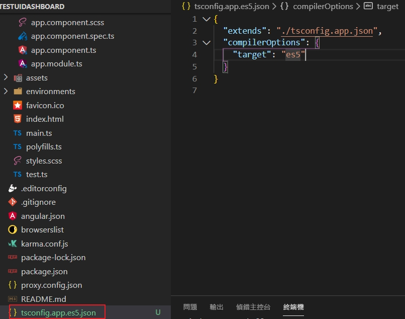
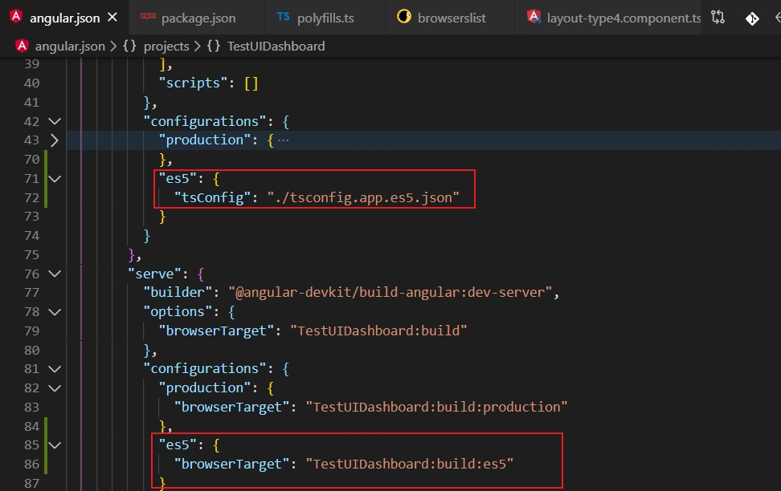

IE11影像播放問題 在IE11在播放mp4的影像時，需要在聲音的播收需要使用acc的格式
讓IE11可以在Angular9上執行 因為日本客戶要求，要在IE10 IE11上可以執行，所以先來將Angular9，來測試一下可不可以使用因為在官方的文件上，是可以支持IE9-11的，所以來測試一下。
目前使用的方法 安裝程式庫
1 2 npm install --save classlist.js npm install --save web-animations-js
修改src\polyfills.ts中，將需要的程式庫打開
1 2 3 4 5 6 7 8 9 10 11 12 13 import 'classlist.js' ; import 'web-animations-js' ;
在browserslist檔案
1 2 3 4 5 6 7 8 9 10 11 12 13 # This file is used by the build system to adjust CSS and JS output to support the specified browsers below. # For additional information regarding the format and rule options, please see: # https://github.com/browserslist/browserslist#queries # You can see what browsers were selected by your queries by running: # npx browserslist > 0.5% last 2 versions Firefox ESR not dead not IE 9-11 # For IE 9-11 support, remove 'not'. IE 10-11
修改tsconfig.json將”target”: “es2015”改成”target”: “es5”,
1 2 3 4 5 6 7 8 9 10 11 12 13 14 15 16 17 18 19 20 21 22 23 { "compileOnSave" : false , "compilerOptions" : { "baseUrl" : "./" , "outDir" : "./dist/out-tsc" , "sourceMap" : true , "declaration" : false , "downlevelIteration" : true , "experimentalDecorators" : true , "module" : "esnext" , "moduleResolution" : "node" , "importHelpers" : true , "target" : "es5" , "lib" : [ "es2018" , "dom" ] }, "angularCompilerOptions" : { "fullTemplateTypeCheck" : true , "strictInjectionParameters" : true } }
參考資料Angular and Internet Explorer
有如入tsconfig的方法 安裝程式庫
1 2 npm install --save classlist.js npm install --save web-animations-js
在browserslist檔案
1 2 3 4 5 > 0.5% last 2 versions Firefox ESR not dead IE 9-11 # For IE 9-11 support, remove 'not'.
先來建立一個tsconfig.app.es5.json(自已取一個任意檔名)繼承tsconfig.app.json，但輸出設為ES5
1 2 3 4 5 6 { "extends" : "./tsconfig.app.json" , "compilerOptions" : { "target" : "es5" } }
如下個所示

angular.json
在architect.build.configurations下多一估ES5，指定到新的tsconfig.app.es5.json
在serve.configurations下多一個ES5指定新的builder option

package.json
指定原本的start為新的方式
1 2 3 4 5 6 7 8 9 "scripts": { "ng": "ng", "start": "ng serve --host=0.0.0.0 --proxy-config proxy.config.json --configuration es5", "start-es6": "ng serve --host=0.0.0.0 --proxy-config proxy.config.json", "build": "ng build", "test": "ng test", "lint": "ng lint", "e2e": "ng e2e" },
參考資料 Angular 8 設定 - 支援 IE 11 顯示
設定讓IE11可以在獨立的執行 因為在專案上，之前的作法是將整個網站放在專案的一個資料夾，之後在C#的webbrowser來執行它的index.html檔，這樣就不用另外架設web服務器。測試方法很簡單，在angular執行build成production時會產生dist的資料夾，如果可以將dist的資料夾中的index.html直接拖放到ie11,如果可以顯示，那基本上應該是沒有問題。github
先來建立測試專案
修改APP_BASE_HREF的路徑 在src\app\app.module.ts主要的修改是import { CommonModule, APP_BASE_HREF, LocationStrategy, HashLocationStrategy } from '@angular/common';和providers: [ { provide: APP_BASE_HREF, useValue: '/' }, { provide: LocationStrategy, useClass: HashLocationStrategy }, ],如下
1 2 3 4 5 6 7 8 9 10 11 12 13 14 15 16 17 18 19 20 21 22 23 import { BrowserModule } from '@angular/platform-browser' ;import { NgModule } from '@angular/core' ;import { AppRoutingModule } from './app-routing.module' ;import { AppComponent } from './app.component' ;import { CommonModule, APP_BASE_HREF, LocationStrategy, HashLocationStrategy } from '@angular/common' ;@NgModule ({ declarations: [ AppComponent ], imports: [ CommonModule, BrowserModule, AppRoutingModule ], providers: [ { provide: APP_BASE_HREF, useValue: '/' }, { provide: LocationStrategy, useClass: HashLocationStrategy }, ], bootstrap: [AppComponent] }) export class AppModule { }
修改index.html的路徑 接下來在src\index.html中的修改主要是加入<meta http-equiv="X-UA-Compatible" content="IE=11">和<!-- <base href="/"> -->如下
1 2 3 4 5 6 7 8 9 10 11 12 13 14 15 16 17 <!doctype html> <html lang ="en" > <head > <meta http-equiv ="X-UA-Compatible" content ="IE=11" > <meta charset ="utf-8" > <title > Ie11</title > <meta name ="viewport" content ="width=device-width, initial-scale=1" > <link rel ="icon" type ="image/x-icon" href ="favicon.ico" > </head > <body > <app-root > </app-root > </body > </html >
顯示一張圖片先將圖片拷貝到src\assets
在src\app\app.component.html
1 2 3 4 <h3 > 顯示一張圖片</h3 > <img src ="assets/2019-08-22_12_29_57_Image.png" > <router-outlet > </router-outlet >
修改編譯版本 設定編譯版本將原來的"target": "es2015",修改成"target": "es5"
在tsconfig.json
1 2 3 4 5 6 7 8 9 10 11 12 13 14 15 16 17 18 19 20 21 22 23 24 25 26 { "compileOnSave" : false , "compilerOptions" : { "baseUrl" : "./" , "outDir" : "./dist/out-tsc" , "sourceMap" : true , "declaration" : false , "downlevelIteration" : true , "experimentalDecorators" : true , "module" : "esnext" , "moduleResolution" : "node" , "importHelpers" : true , "target" : "es5" , "typeRoots" : [ "node_modules/@types" ], "lib" : [ "es2018" , "dom" ] }, "angularCompilerOptions" : { "fullTemplateTypeCheck" : true , "strictInjectionParameters" : true } }
參考資料
Running an angular 2 application built locally on Chrome using angular-cli without a node server
在專案上的應用上是windwos form和IE11，有可能會互傳資料，所以先來測試一下
在win form的建置和設定，就不列出來，相關的程式碼有在github上，所以可以下載來看。
基本的流程
<pre class="mermaid">graph TD; winfom呼叫callMe --> javascript收到 javascript收到 --> 呼叫設定好的元件
1 2 3 4 5 private void button1_Click(object sender, System.EventArgs e) { object[] args = { "argString1", "argString2" }; object ret = webBrowser1.Document.InvokeScript("callMe", args); }
Angular上的主要程式 在src\index.html有javascript的程式,這里有要注要的地方，是IE11的問題在功能呼叫時可以有這樣的簡寫()=>{}，但是IE11會將它過濾掉，所以要改寫成function() {} 參考
https://www.c-sharpcorner.com/blogs/call-angular-2-function-from-javascript
1 2 3 4 5 6 7 8 9 10 11 12 13 14 15 16 17 18 19 20 21 22 23 24 25 26 27 28 <!doctype html> <html lang ="en" > <head > <meta http-equiv ="X-UA-Compatible" content ="IE=11" > <meta charset ="utf-8" > <title > Ie11</title > <meta name ="viewport" content ="width=device-width, initial-scale=1" > <link rel ="icon" type ="image/x-icon" href ="favicon.ico" > </head > <body > <app-root > </app-root > </body > <script type ="text/javascript" > function callMe (arg1, arg2) let alertMessage = "arg1 is " + arg1 + " and arg2 is " + arg2 + "!" ; alert(alertMessage); window .angularComponentReference.zone.run(function (window .angularComponentReference.loadAngularFunction(arg1, arg2); }); } </script > </html >
在元件上的設定src\app\app.component.ts
1 2 3 4 5 6 7 8 9 10 11 12 13 14 15 16 17 18 19 20 21 22 23 24 25 26 import { Component, NgZone, OnInit } from '@angular/core' ;@Component ({ selector: 'app-root' , templateUrl: './app.component.html' , styleUrls: ['./app.component.scss' ] }) export class AppComponent implements OnInit { title = 'ie11' ; constructor ( private ngZone: NgZone, ) { } ngOnInit(): void { window ['angularComponentReference' ] = { component: this , zone: this .ngZone, loadAngularFunction: (arg1, arg2 ) => this .angularFunctionCalled(arg1, arg2), }; } public angularFunctionCalled(arg1, arg2) { let alertMessage = "angular :arg1 is " + arg1 + " and arg2 is " + arg2 + "!" ; alert(alertMessage); } }
將Angular中來呼叫Form的方法和傳資料給它參考
在Form的程式，主要是在一開始要設定誰來處理這個功能webBrowser1.ObjectForScripting = this,在被Javascript呼叫的功能是OnWebPageReady(string msg)
1 2 3 4 5 6 7 8 9 10 11 12 public Form1() { InitializeComponent(); webBrowser1.ObjectForScripting = this;//2、設定js中window.external物件代表的類 webBrowser1.ScriptErrorsSuppressed = true; } public void OnWebPageReady(string msg) { MessageBox.Show(msg); }
在angular中src\index.html中來呼叫callFunc(arg1)並傳入參數
1 2 3 4 5 <script type ="text/javascript" > function callFunc (arg1) window .external.OnWebPageReady(arg1); } </script >
在src\app\app.component.html中加入呼叫的button
1 2 3 4 5 <h3 > 顯示一張圖片</h3 > <img src ="assets/2019-08-22_12_29_57_Image.png" > <button (click )="sendDatatoWinform()" > 傳送到winform</button > <router-outlet > </router-outlet >
在src\app\app.component.ts中主要是來宣告呼叫Javascript的功能declare var callFunc: Function;之後可以在元件中來呼叫sendDatatoWinform()
1 2 3 4 5 6 7 8 9 10 11 12 13 14 import { Component, NgZone, OnInit } from '@angular/core' ;declare var callFunc: Function ;@Component ({ selector: 'app-root' , templateUrl: './app.component.html' , styleUrls: ['./app.component.scss' ] }) export class AppComponent implements OnInit { sendDatatoWinform() { let msg = "this data form angular" ; callFunc(msg); } }
之後在來寫管理器來統一處理這些機制
設定讓IE11可以執行angular2 安裝classlist.js
1 2 npm install --save classlist.js npm install --save web-animations-js